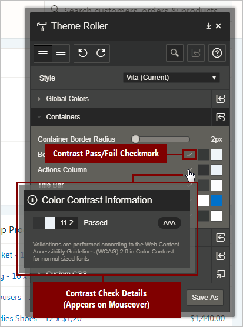

4.1 Developing Accessible Themes
Themes are collections of templates that enable you to define the layout and style of an entire application. Oracle Application Express apps use Universal Theme by default.
Important:
Oracle recommends using Universal Theme for creating accessible apps.
This guide is written for use with the Universal Theme. This guide does not support customized themes directly. While some discussion applies generally to all apps, many discussions are specific to Universal Theme.
Parent topic: Developing Accessible Apps
4.1.1 About Accessibility Features in Universal Theme
Universal Theme (also called Theme 42 or sometimes abbreviated as UT) was first introduced in Oracle Application Express 5.0 to improve out of the box usability and accessibility for Application Express apps.
While you can create and use your own fully accessible custom themes in Oracle Application Express, this guide only provides instructions for apps using Universal Theme.
Oracle strongly recommends migrating from older themes to Universal Theme. See the Universal Theme migration guide for further assistance.
Parent topic: Developing Accessible Themes
4.1.2 About Accessible Theme Styles
Theme styles enable you to change the look and feel of an app without switching to an entirely different theme.
Oracle recommends using the default Oracle Application Express theme style Vita for best accessibility.
You can mark theme styles in Oracle Application Express as accessibility tested. Because the underlying CSS of a theme style affects the overall accessibility of an app, you can mark a theme style as accessibility tested if you are confident that it meets the appropriate accessibility standards that you or your organization must adhere to. The Vita theme style is accessibility tested.
Parent topic: Developing Accessible Themes
4.1.3 About Theme Roller
Theme Roller is a developer tool in the application runtime for analyzing and declaratively adjusting the style settings of Universal Theme without needing to know the underlying CSS.
Some color combinations cause accessibility issues due to a lack of contrast. To help prevent this, Theme Roller has automatic color contrast checking that analyzes your app’s compliance with WCAG 2.0 contrast standards. Theme Roller notifies you if a setting passes or fails this contrast check.

Description of the illustration theme_roller_color_contrast_check.png
A check mark appears next to color combinations for settings to indicate that the color contrast defined meets the minimum required ratio. You can also mouse over the check mark, and a small dialog displays showing the exact contrast ratio, and to what WCAG 2.0 conformance level this achieves (either AA or AAA).
To learn more about minimum color contrast, see WCAG 2.0 Understanding 1.4.3 Color Contrast.
Note:
While Theme Roller is a powerful tool for assessing the accessibility of your app, unfortunately Theme Roller itself is not fully accessible. A more accessible version of Theme Roller is planned for a future release.
Parent topic: Developing Accessible Themes